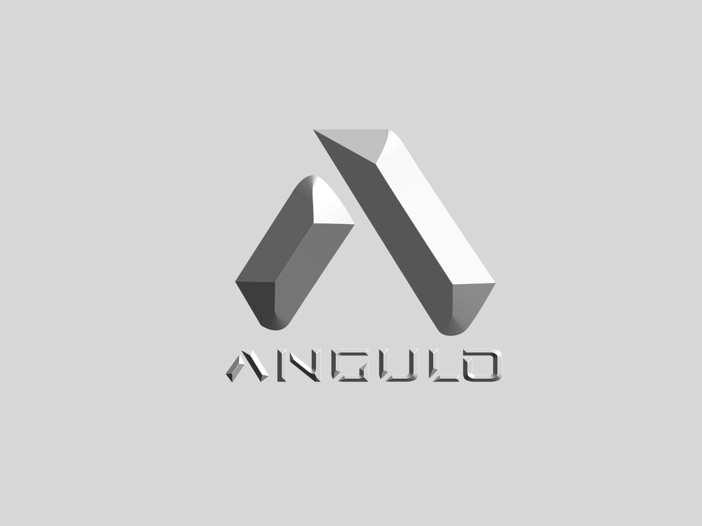

My Resume

Destinnie Rickard
New Zealand
022 222222
Objective
My objective is to upskil and excel in different areas of I.T, my passion is arounnd A.I and machine learning
Education
Nelson Marlborough Institute of Technology
From - To
- July 2018 - July 2021
Qualifications
- Bachelor of Information Technology
Courses
- Software Development
- Web Development
- Data Base Administration
- Systems Analysis and Design
Work Experience
Sealord Group Limited
- UX Analyst
Responsibilities Include
- Devlopinng Work Spaces for new ERP system
- Developing all current documents produced by day to day activity and translating them through the new ERP
via IDM
- Using Infor Cloud Suite Technnologys
- Working with the bubsiness to gather requirements
Skills
- UX research
- Infor Cloud Suite Technology
- ERP Systems
- Python
- Agile
- Azure Devops